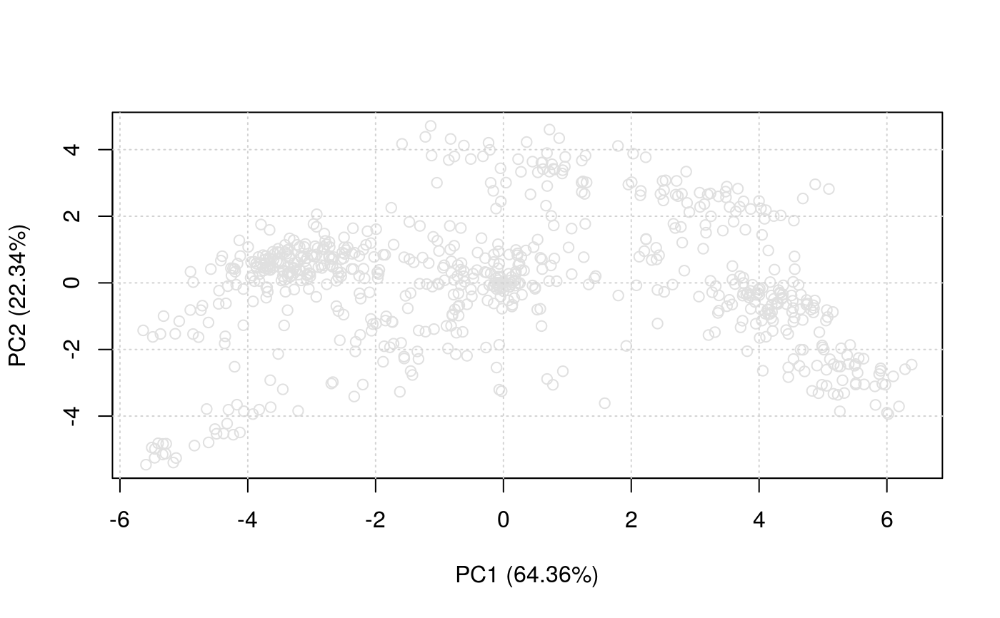
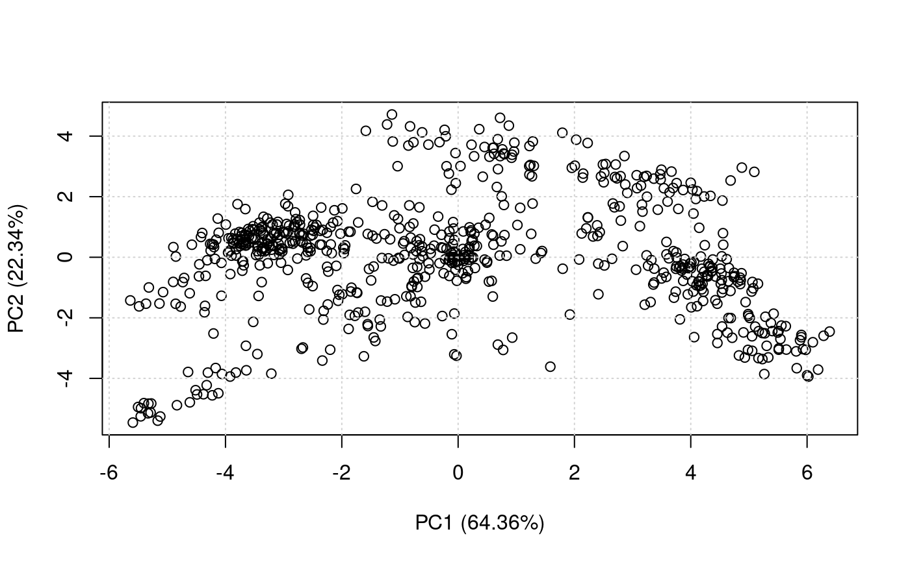
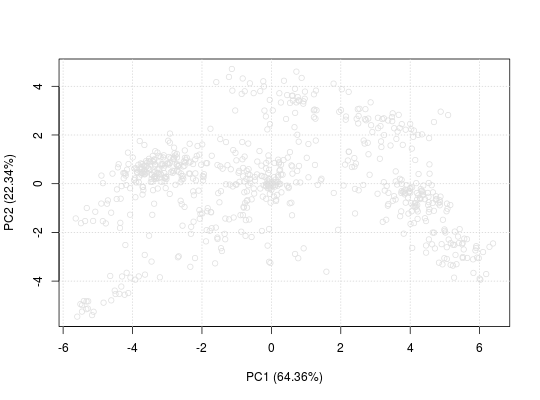
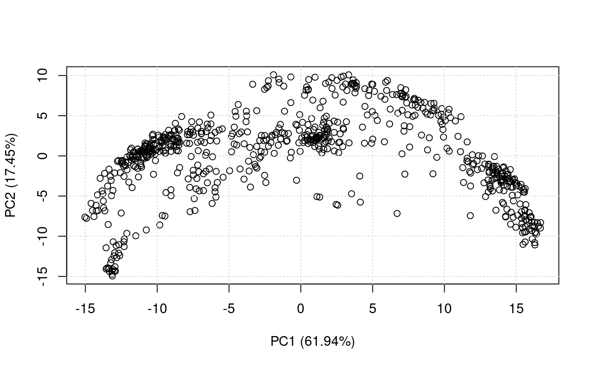
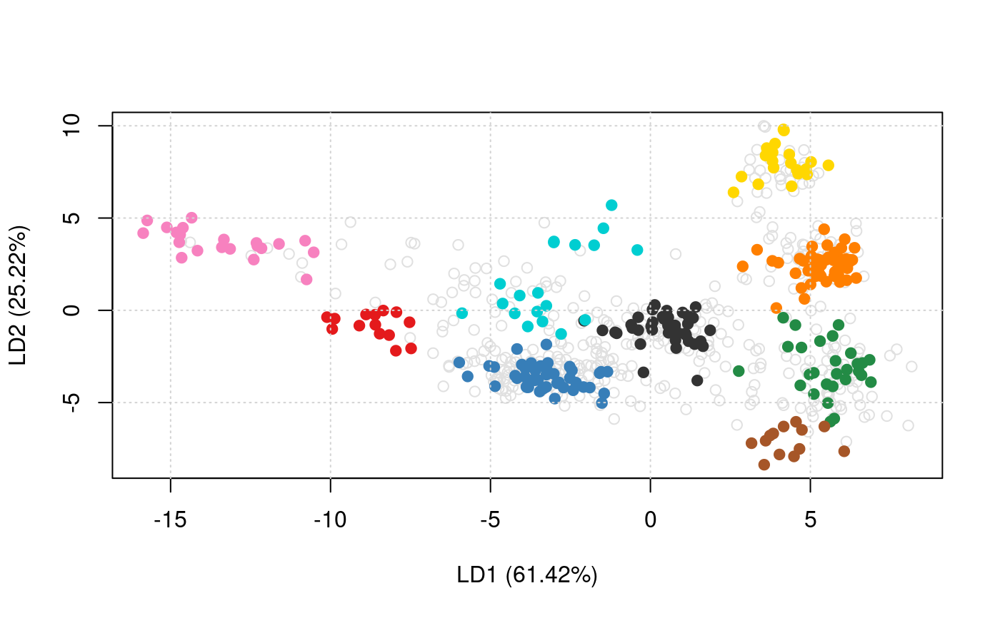
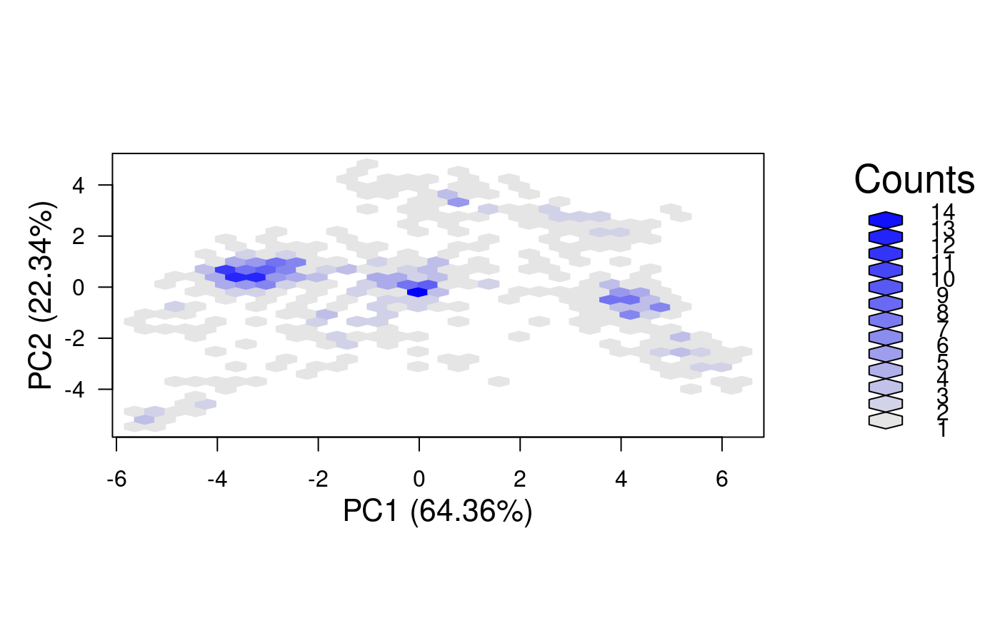
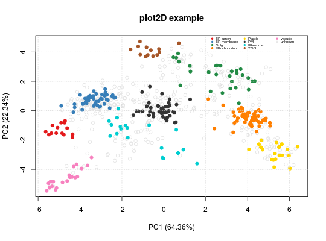
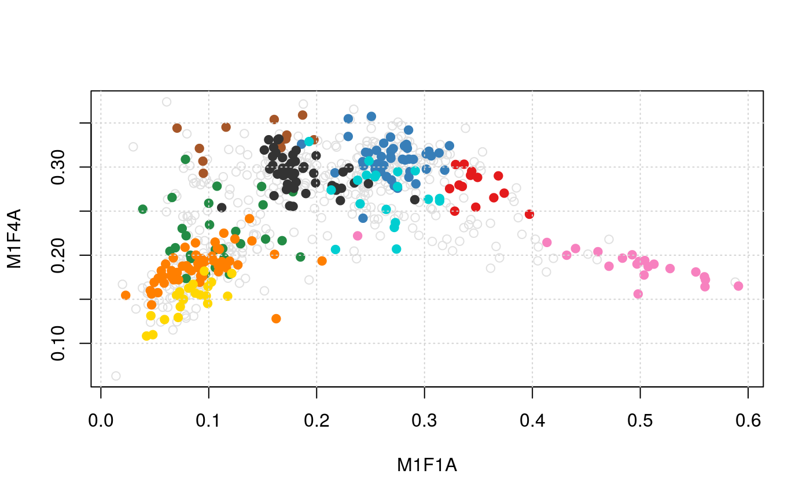
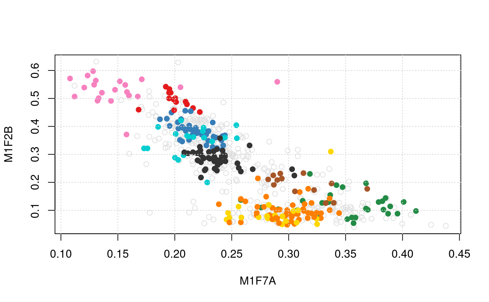
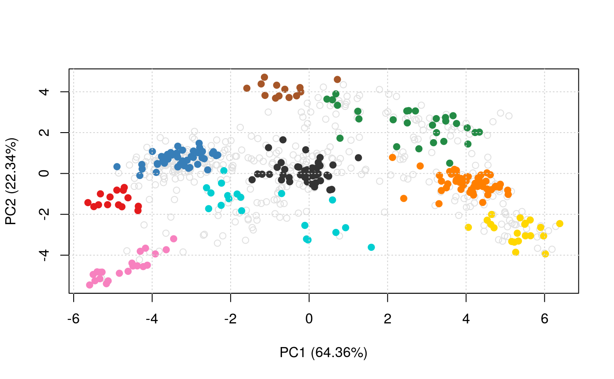

Generate 2 or 3 dimensional feature distribution plots to
illustrate localistation clusters. Rows/features containing
NA values are removed prior to dimension reduction except
for the "nipals" method. For this method, it is advised to
set the method argument `ncomp` to a low number of dimensions to
avoid computing all components when analysing large datasets.
plot2D(object, fcol = "markers", fpch, unknown = "unknown", dims = 1:2, score = 1, method = "PCA", methargs, axsSwitch = FALSE, mirrorX = FALSE, mirrorY = FALSE, col, pch, cex, index = FALSE, idx.cex = 0.75, addLegend, identify = FALSE, plot = TRUE, ...) # S4 method for MSnSet plot3D(object, fcol = "markers", dims = c(1, 2, 3), radius1 = 0.1, radius2 = radius1 * 2, plot = TRUE, ...)
Arguments
| object | An instance of class |
|---|---|
| fcol | Feature meta-data label (fData column name) defining
the groups to be differentiated using different
colours. Default is |
| fpch | Featre meta-data label (fData column name) desining the groups to be differentiated using different point symbols. |
| unknown | A |
| dims | A |
| score | A numeric specifying the minimum organelle assignment score to consider features to be assigned an organelle. (not yet implemented). |
| method | A
If none is used, the data is plotted as is, i.e. without any
transformation. In this case, Available methods are listed in |
| methargs | A |
| axsSwitch | A |
| mirrorX | A |
| mirrorY | A |
| col | A |
| pch | A |
| cex | Character expansion. |
| index | A |
| idx.cex | A |
| addLegend | A character indicating where to add the
legend. See |
| identify | A logical (default is |
| plot | A |
| ... | Additional parameters passed to |
| radius1 | A |
| radius2 | A |
Value
Used for its side effects of generating a plot. Invisibly returns the 2 or 3 dimensions that are plotted.
Details
plot3D relies on the ##' rgl package, that will be
loaded automatically.
Note that
plot2Dhas been update in version 1.3.6 to support more organelle classes than colours defined ingetStockcol. In such cases, the default colours are recycled using the default plotting characters defined ingetStockpch. See the example for an illustration. Thealphaargument is also depreciated in version 1.3.6. UsesetStockcolto set colours with transparency instead. See example below.Version 1.11.3: to plot data as is, i.e. without any transformation,
methodcan be set to "none" (as opposed to passing pre-computed values tomethodas amatrix, in previous versions). Ifobjectis anMSnSet, the untransformed values in the assay data will be plotted. Ifobjectis amatrixwith coordinates, then a matchingMSnSetmust be passed tomethargs.
See also
addLegend to add a legend to plot2D
figures (the legend is added by default on plot3D) and
plotDist for alternative graphical
representation of quantitative organelle proteomics
data. plot2Ds to overlay 2 data sets on the same
PCA plot. The plotEllipse function can be used
to visualise TAGM models on PCA plots with ellipses.
Examples
library("pRolocdata") data(dunkley2006) plot2D(dunkley2006, fcol = NULL)plot2D(dunkley2006, fcol = NULL, col = "black")plot2D(dunkley2006, fcol = "markers")title(main = "plot2D example")## available methods plot2Dmethods#> [1] "PCA" "MDS" "kpca" "lda" "t-SNE" "nipals" "hexbin" "none" #> [9] "scree"plot2D(dunkley2006, fcol = NULL, method = "kpca", col = "black")plot2D(dunkley2006, fcol = NULL, method = "kpca", col = "black", methargs = list(kpar = list(sigma = 1)))plot2D(dunkley2006, method = "lda")plot2D(dunkley2006, method = "hexbin")#> Error in assign("stockcol", cols, envir = .pRolocEnv): cannot change value of locked binding for 'stockcol'plot2D(dunkley2006, fcol = "markers")#> Error in assign("stockcol", cols, envir = .pRolocEnv): cannot change value of locked binding for 'stockcol'getStockcol() ## only 3 colours to be recycled#> [1] "#E41A1C" "#377EB8" "#238B45" "#FF7F00" "#FFD700" "#333333" "#00CED1" #> [8] "#A65628" "#F781BF" "#984EA3" "#9ACD32" "#B0C4DE" "#00008A" "#8B795E" #> [15] "#FDAE6B" "#66C2A5" "#276419" "#CD8C95" "#6A51A3" "#EEAD0E" "#0000FF" #> [22] "#9ACD32" "#CD6090" "#CD5B45" "#8E0152" "#808000" "#67000D" "#3F007D" #> [29] "#6BAED6" "#FC9272"getMarkers(dunkley2006)#> organelleMarkers #> ER lumen ER membrane Golgi Mitochondrion Plastid #> 14 45 28 55 20 #> PM Ribosome TGN unknown vacuole #> 46 19 13 428 21plot2D(dunkley2006)#> Error in assign("stockcol", stockcol, envir = .pRolocEnv): cannot change value of locked binding for 'stockcol'plot2D(dunkley2006, method = "none") ## plotting along 2 first fractionsplot2D(dunkley2006, dims = c(3, 5), method = "none") ## plotting along fractions 3 and 5## pre-calculate PC1 and PC2 coordinates pca <- plot2D(dunkley2006, plot=FALSE) head(pca)#> PC1 (64.36%) PC2 (22.34%) #> AT1G09210 -4.734261 -0.8204175 #> AT1G21750 -4.615276 -1.1891468 #> AT1G51760 -4.770573 -1.6292717 #> AT1G56340 -5.318056 -0.9972462 #> AT2G32920 -5.135122 -1.5283630 #> AT2G47470 -4.899410 -0.8145343plot2D(pca, method = "none", methargs = list(dunkley2006))## plotting in 3 dimenstions plot3D(dunkley2006) plot3D(dunkley2006, radius2 = 0.3) plot3D(dunkley2006, dims = c(2, 4, 6))